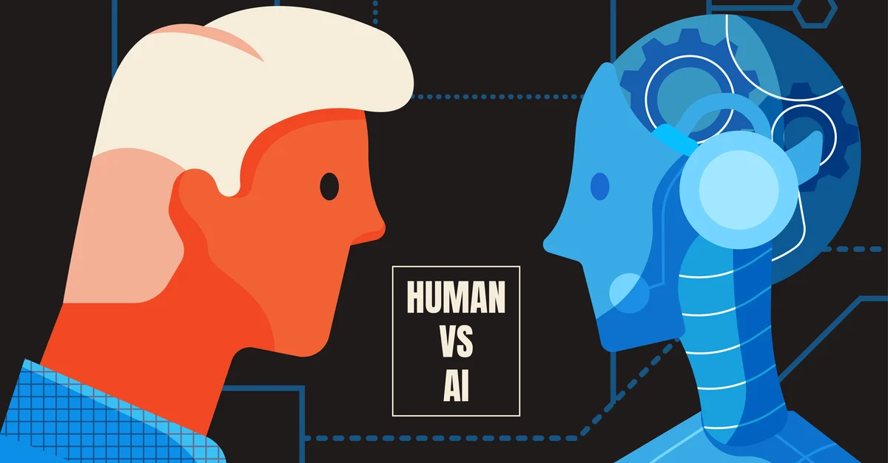
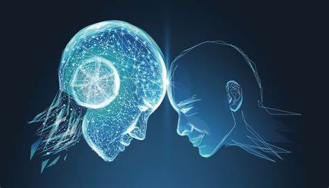

| Sl.No |
|
|
|
|---|---|---|---|
| 1 |
Emergence |
AI is an advancement made by human insights; its early improvement is credited to Norbert Weiner who theorized on criticism mechanisms |
On the other hand, human creatures are made with the intrinsic capacity to think, reason, review, etc. |
| 2 |
Nature |
Artificial intelligence (AI) strives to build machines that can mimic human behavior and carry out human-like tasks. |
Human intelligence seeks to adapt to new situations by combining a variety of cognitive processes. |
| 3 |
State |
Machines Are Digital |
The human brain is analogous. |
| 4 |
Function |
AI-powered machines rely on input of data and instructions. |
Humans use their brains, memory, processing power, and cognitive abilities. |
| 5 |
Pace/Rate of AI and human |
As compared to people, computers can handle more data at a speedier rate. For occurrence, in the event that the human intellect can solve a math problem in 5 minutes, AI can solve 10 problems in a minute. |
In terms of speed, humans cannot beat the speed of AI or machines. |
| 6 |
Learning Abilities |
As machines are unable to reason abstractly or draw conclusions from the past. They can only acquire knowledge through information and frequent training, but they will never develop a human-specific thinking process. |
Learning from various events and prior experiences is the foundation of human intelligence. |